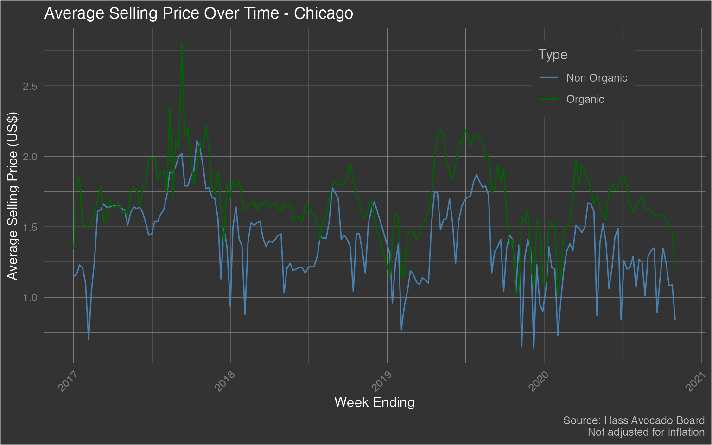

b_analyze-hass.RmdThe {avocado} package provides a weekly summary - starting from January 2017 through November 2020 - of Hass Avocado sales. There are three datasets in this package and let’s start with the dataset hass which focuses on weekly avocado sales in various cities/sub-regions across various regions (as defined by the Hass Avocado Board) of the contiguous US. The region variable in the hass dataset can be ‘merged’ with the hass_region dataset using the region variable in both. Do note that the location variable only consists of a sample of cities/sub-regions found within respective regions. Therefore, the totals in this dataset will NOT equal the totals found in the hass_region dataset.
Let’s start by loading the package - along with {dplyr} (for data wrangling) and {ggplot} (for data visualization) - and exploring it’s structure
library(avocado)
library(dplyr)
#>
#> Attaching package: 'dplyr'
#> The following objects are masked from 'package:stats':
#>
#> filter, lag
#> The following objects are masked from 'package:base':
#>
#> intersect, setdiff, setequal, union
library(ggplot2)
data('hass')
dplyr::glimpse(hass)
#> Rows: 8,865
#> Columns: 17
#> $ week_ending <dttm> 2017-01-02, 2017-01-02, 2017-01-02, 2017-01-02, 20…
#> $ location <chr> "Albany", "Atlanta", "Baltimore/Washington", "Boise…
#> $ region <chr> "Northeast", "Southeast", "Midsouth", "West", "Nort…
#> $ avg_price_nonorg <dbl> 1.47, 0.93, 1.47, 0.92, 1.29, 1.43, 1.21, 1.15, 0.6…
#> $ plu4046 <dbl> 4845.77, 224073.54, 54530.42, 27845.16, 4119.90, 12…
#> $ plu4225 <dbl> 117027.41, 118926.37, 408952.26, 9408.92, 371223.34…
#> $ plu4770 <dbl> 200.36, 337.48, 14387.01, 11341.75, 3933.72, 102.52…
#> $ small_nonorg_bag <dbl> 7866.86, 111599.58, 151345.59, 53093.47, 79339.78, …
#> $ large_nonorg_bag <dbl> 7.83, 92628.91, 2542.41, 2793.61, 213.75, 255.65, 1…
#> $ xlarge_nonorg_bag <dbl> 0.00, 0.00, 3.12, 27.20, 0.00, 18.06, 46.67, 5089.3…
#> $ avg_price_org <dbl> 1.87, 1.81, 1.92, 1.05, 2.06, 1.64, 1.70, 1.34, 1.2…
#> $ plu94046 <dbl> 71.65, 956.73, 1420.47, 0.00, 14.80, 8.52, 120.83, …
#> $ plu94225 <dbl> 192.63, 2862.95, 6298.07, 368.63, 2181.53, 320.56, …
#> $ plu94770 <dbl> 0.00, 0.00, 325.44, 0.00, 0.00, 0.00, 489.12, 0.00,…
#> $ small_org_bag <dbl> 1112.42, 5.55, 5857.48, 577.91, 10636.25, 2585.10, …
#> $ large_org_bag <dbl> 0.00, 1517.62, 0.00, 1877.28, 605.64, 511.31, 353.9…
#> $ xlarge_org_bag <dbl> 0, 0, 0, 0, 0, 0, 0, 0, 0, 0, 0, 0, 0, 0, 0, 0, 0, …Let’s begin by exploring the following topic:
hass %>%
filter(location == 'Chicago') %>%
ggplot(aes(x = week_ending)) +
geom_line(aes(y = avg_price_nonorg, color = 'Non Organic')) +
geom_line(aes(y = avg_price_org, color = 'Organic')) +
scale_color_manual(name = 'Type', values = c('Non Organic' = 'steelblue', "Organic" = 'darkgreen')) +
labs(x = 'Week Ending', y = 'Average Selling Price (US$)', title = 'Average Selling Price Over Time - Chicago', caption = "Source: Hass Avocado Board\nNot adjusted for inflation") +
theme(plot.background = element_rect(fill = "grey20"),
plot.title = element_text(color = "#FFFFFF"),
axis.title = element_text(color = "#FFFFFF"),
axis.text.x = element_text(color = 'grey50', angle = 45, hjust = 1),
axis.text.y = element_text(color = 'grey50'),
plot.caption = element_text(color = 'grey75'),
panel.background = element_blank(),
panel.grid.major = element_line(color = "grey50", size = 0.2),
panel.grid.minor = element_line(color = "grey50", size = 0.2),
legend.background = element_rect(fill = 'grey20'),
legend.key = element_rect(fill = 'grey20'),
legend.title = element_text(color = 'grey75'),
legend.text = element_text(color = 'grey75'),
legend.position = c(0.815, 0.85)
)